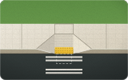

Wings
Perpendicular ramp with wings
The usual corner ramp, where the sidewalk runs right up to the curb. Two per corner, one lined up with each crossing.
- 5 ft wide ramp (4 ft is the minimum)
- 6 ft long rising 6 in at 8.3%, the steepest allowed
- 5 ft wings on each side along the curb, at 10%
- 4 ft landing level, at the top, as wide as the ramp
- 2 ft yellow panel truncated domes across the full width, at the curb
- 4 × 4 ft clear area on the street, inside the crosswalk